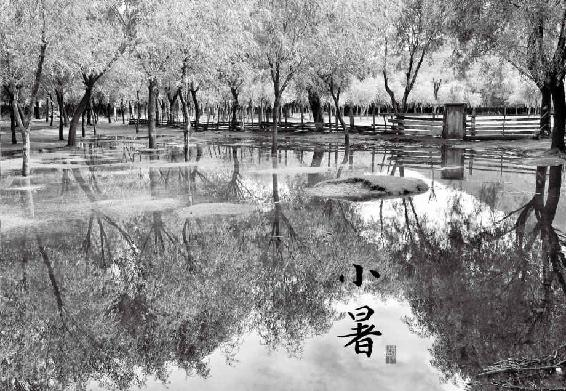
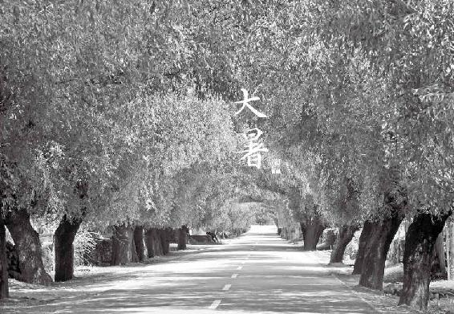
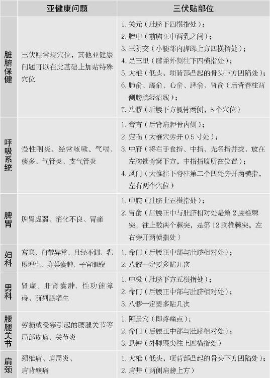
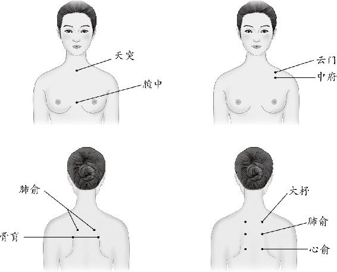

小暑，每年的7月7日到8日之间交小暑节气，进入夏天的第三个月。古人认为，盛夏不宜举大事，以免动摇夏季的生养之气，影响人体的“长”。
此时天地间就像个汗蒸房，人体就像在做汗蒸一样，全身毛孔腠理都张开了。我们趁这个天时来排血毒、火毒、光毒，是最合适不过的，能使排毒效果事半功倍。
34.“小暑大暑，上蒸下煮”：小暑时节，排毒事半功倍
每年的7月7日到8日之间交小暑节气，进入夏天的第三个月，季夏，也就是盛夏。这个月学生放暑假，欧洲一些国家也给大人放长假。这是很有道理的。中国古代也认为，盛夏不宜举大事，以免动摇夏季的生养之气，影响人体的“长”。
我们把季春称为暮春，季秋称为晚秋，但夏天的最后一个月为何是“盛”夏呢？因为夏至时“日北至”还不算热，要等大地都晒暖了，地气上蒸，才是最热的时候。
民间谚语说：小暑大暑，上蒸下煮。这句话很形象。此时天地间就像个汗蒸房，人体就像在做汗蒸一样，全身毛孔腠理都张开了。我们趁这个时候来排毒，最合适不过。
盛夏是我们给身体排毒的好时机。借助天时，能使排毒事半功倍。毒有很多种，小暑节气我们重点对抗三大毒—血毒、火毒、光毒。
35.小暑时节排血毒食方：松花蛋红苋汤
我们身体内有毒，一定要排得出去才好。实际上，衡量一个人年轻的标志之一就是：排毒通道都很畅通，也就是能通过大小便和汗液排出毒素。但现在人们往往这三大通道都不太畅通，毒素排不出去，就在血液中循环全身。夏天的阳气已经帮我们打通了毛孔，我们就重点来打通肠道，使血毒能够排出去。
小暑时节排血毒食方：松花蛋红苋汤
原料：红苋菜（嫩的、带根的）1把、松花蛋2只、大蒜2~3瓣、油（猪油最好）、盐少许。
做法：
① 整株的嫩苋菜带根洗干净，有些比较长的苋菜，可以切成两半。
② 锅里放油，蒜切成两半，下锅爆香。
③ 松花蛋下锅炒一下，再放入苋菜快炒两下，加少许盐。
④ 放入高汤或开水，水烧开后再煮2~3分钟关火。
功效：清血毒，排肠毒，祛暑热。
允斌叮嘱
① 买嫩一点的苋菜，带着细根的那种，连根一起吃效果好。
② 把汤浇一点在米饭上，就染成了红米饭，孩子会很喜欢的。
③ 苋菜有滑胎的作用，怀孕4个月以内的女性不要吃。
④ 这道汤最好是放猪油，猪油也是润肠排毒的，能加强这道汤排毒的功效。苋菜很服猪油，这样煮出来的汤很鲜。
以前给大家讲过，松花蛋能解血液中的烟毒和酒毒。那么苋菜有什么作用呢？
古人认为，苋能通九窍。什么是九窍呢？我们的身体，凡是有对外开口的地方都称为“窍”，比如两只眼睛、两个鼻孔、两个耳朵眼……苋通九窍，就是能使我们的排毒通道畅通。夏天阳气外泄，人体就是需要通，通了以后才能排毒。
有些便秘的朋友会发现，吃了苋菜以后，上厕所感觉很畅快。这是因为苋菜可以通大小肠，使消化系统和大小便保持畅通，同时排出肠毒。苋菜根通肠的效果更好。
眼睛也属于九窍，所以苋菜有明目的功效，对老年人很适合。苋菜的籽还有治眼病的作用。老年人用苋菜籽炖猪肝来吃，可以防治白内障和青光眼。
市场上的苋菜有白的，有红的。白苋偏于通气，红苋偏于通血。我们清血毒用红苋菜效果更好。

瀚宝妈@卢：我们庆幸在一个超市能买到红苋菜，这个夏天坚持煮着吃，吃到了儿时家乡的味道。原来，老一辈人在无形中也遵循节气养生，好吃好喝，连不爱吃菜的儿子每次都吃一碗汤菜，吃完第二天就去厕所排毒，身体立马轻松，这个夏天幸好有陈老师。
花开花落：昨天中午做了苋菜皮蛋汤，味道很好，很爱吃，主要还能排毒，谢谢无私的陈老师。
清：西安的夏天是相当热的。以前，夏天是最难挨的日子，但是自从看了陈老师的书，夏天常吃松花蛋红苋汤还有凉拌马齿苋，忽然觉得夏天也没那么难挨了，周围的气温虽然很热，但是自己的身体却觉得很轻松，没有往日酷热难耐的感觉。真的好神奇！
简单：2018年夏天，天气很炎热，我的脖子、腋窝下、肚子上、后腰、大腿外侧、小腿外侧皮肤上出现很多一块一块的红色印记，又痒又痛。我煮了两次松花蛋红苋汤，红印记就慢慢消了。一点痕迹都没留下。
佰桐商城：今天晚上按照老师的视频做了松花蛋红苋汤。带着忐忑的心情和先生一起品尝。没有想到一大碗的汤，瞬间就没有了。好久没有吃饭没吃够的感觉了。感谢老师的分享。

爱的记忆问：老师，我怀孕时就有热毒，和书中症状一样，身上经常痒。儿子现在5岁了，有时身上也会痒。用松花蛋红苋汤可以吗？买来的松花蛋会不会含铅太高？孩子可以吃吗？还是用鱼腥草好啊？请老师指教。
允斌答：书里其他祛血毒的也可以用。
36.夏天如何判断自己有血热毒
身体有血毒的人，被暑热侵袭后，往往皮肤容易起各种红疹。有些人到夏天的时候，肘窝和膝盖窝，都长红疹，这个就是血热毒。
天热的时候，有的小孩子身体和四肢，突然长出小小的、圆圆的、一个一个的疹子，摸摸额头有点热，这有可能是血热毒。大人千万不要错看成蚊虫叮咬，更不要给孩子擦清凉油。
这个时候不要只摸孩子的额头，要摸摸全身，特别是看看后脖子是不是也热。如果都是热的，这不是发烧，而是血热毒，是暑热入血引起的。
37.祛夏季火毒的食方：莲子心甘草茶
夏季的天时属火，火盛则为毒。火毒有一个特征，它一定会在身体的上部表现出来。中医讲“火性炎上”。所以我们的身体要是中了火毒，首先会从头面看出来，比如眼睛发红、脸上长痘、口舌生疮、口干舌燥等。
舌尖是最明显的。夏天的火是以心火为主，舌为心之苗。对着镜子伸出舌头一看，如果舌尖是红红的，这就是心火。
还有就是心烦。火在很盛的时候，会让人感觉心烦意乱，睡不着觉，所以有些朋友一到天热时就容易失眠。如果心火再重，还会造成小便量少，颜色发黄甚至偏红。
曾经在节目现场有观众问多喝水能不能去火。心火靠喝水是去不掉的。我们喝下去的水走的是消化道。而夏天的火直接入血分，走的是心，喝水是浇不灭它的。
夏天的火毒我们还是要用食物来解掉它。当心火已盛到成毒的时候，我们就要动用莲子心了。
祛夏季火毒的食方“莲子心甘草茶”
原料：莲子心2克、甘草3克。
做法：
① 把莲子心和甘草放进茶壶，冲入沸水，1分钟后倒掉。
② 再次冲入沸水，焖制10分钟后饮用。可以反复冲泡。
功效：生津止渴，清心火，调理心烦失眠。
允斌叮嘱
① 用拇指、食指、中指轻轻捏起一撮莲子心，大概就是2克；而3克甘草的量，大概是6小片。
② 莲子心虽然寒凉，但不凉胃，而是专去心火。
③ 莲子心将心火下引到肾，又将肾水上引到心，通过交通心肾来平息心火，所以对于心肾不交型失眠很有帮助。

Fenny：我有次舌尖起疱都不能好好说话了，用老师的方子莲子心甘草茶，第二天舌尖就没事了，真的是神奇。
Double：去年心火重，喝了几次莲子心甘草茶好很多，心火也没那么旺了。
38.抗夏季光毒的食方：胡萝卜番茄汁
《黄帝内经》记载，夏天要“无厌于日”，就是一定要晒太阳。因为我们要通过晒太阳来补阳气。但最好是在早上10点之前和下午3点之后来晒。因为阳光是把双刃剑。
女孩子都怕夏天晒黑，其实黑色素的产生是为了保护我们的皮肤，它是可以慢慢代谢掉的。我们更应该怕的是光毒。
很多人都没有意识到，光是带毒的。西方人受光毒之害最明显，他们喜欢到海边烈日下暴晒。这样就造成一个后果：到了老年之后，皮肤癌的发病率比较高。
光毒对我们的皮肤有两大危害。第一是皮肤的癌变；第二是皮肤的老化。光毒会破坏皮肤的结缔组织，使胶原蛋白流失，皮肤就逐渐松弛了，皱纹纷纷出现，这都是阳光的光毒带来的危害。
光毒给皮肤带来的危害可以是立竿见影的，比如说晒伤，还有光敏反应。比如吃了芹菜、香菜，特别是一些野菜比如灰灰菜之后，不能够暴晒，否则面部就容易过敏，或是长黑斑。有些朋友喜欢把各种植物切片敷在脸上，敷过之后也最好不要马上去晒太阳，以防止发生光敏反应。
西红柿和胡萝卜都是抗光毒的好东西。夏天可以多吃一些。你还可以把它们榨成汁，出门之前喝一杯，回家再喝一杯。
抗夏季光毒的食方“胡萝卜番茄汁”
原料：西红柿、胡萝卜。
做法：西红柿和胡萝卜切块，一起放在榨汁机里，榨成汁。
允斌叮嘱
① 选熟透的西红柿，抗光毒的效果更好。
② 西红柿能防止光毒伤害皮肤，并使皮肤保持白皙。它跟柠檬美白的作用有些不同。柠檬是晒过之后用的，不能在出门前使用。而西红柿的好处是可以用在晒太阳之前，吃了西红柿再出门，相当于擦了一层防晒霜。
③ 胡萝卜的作用是防止光毒造成皮肤老化，它能够对抗阳光中造成皮肤老化的UV光。 要想取得好的效果，你最好是生的熟的都吃。平时用西红柿和胡萝卜做菜，外出晒太阳就榨汁喝。生吃和熟吃得到的营养不同，综合起来效果才好。

大暑，每年7月22日到24日之间，到8月初立秋前一天为止交大暑节气。这是夏天的最后半个月，但也是最难熬的日子，因为此时暑气到了极致。湿和热夹杂在一起，使人感觉特别的闷热。
暑气会“困”住五脏的机能，而且还伤心气，因为心脏需要加倍工作来帮助人体散热。那么，如何防止暑气伤人呢？
39.大暑时节，湿热“煮”人，最是难熬
大暑节气是从7月22日到24日之间，太阳位于黄经120˚时开始，到8月初立秋前一天为止。这是夏天的最后半个月，但也是最难熬的日子，因为此时暑气到了极致。
“暑”与“热”不同，它有“煮”的意思。古人云：暑不离湿。湿和热夹杂在一起，使人感觉特别的闷热。所以大暑虽然是在立秋前，却往往是一年中最热的时候。
古人用八个字描述大暑“湿”气的来源：土润溽暑，大雨时行。什么意思？大地晒暖之后，地气上蒸，是带着湿气的。而这个时节还经常下点大雨。
清代医家有句经验之谈：“春雨潇潇，夏雨淋淋，秋雨霏霏，冬雨纷纷，人感之者，皆为湿病。”就是说一年四季只要下雨就有湿气。
这其中，暑天的雨水最多，湿气也最大。人们常说防暑降温，其实防暑并不是降温那么简单，还得湿温同防。
中医形容湿气伤人，常用一个“困”字，就像全身衣服被雨淋得透湿之后，那种被裹住的沉重的感觉。湿气与夏天的热气相加，这种暑气就特别使人感到疲乏。
老话讲，春困秋乏夏打盹儿，“夏打盹”就是暑气伤人的一种表现。
暑气会“困”住五脏的机能，而且还伤心气，因为心脏需要加倍工作来帮助人体散热。人会感觉浑身发软，懒洋洋的，心里有烦闷的感觉，总想睡觉，所以就爱打盹。这跟春困是不一样的。
“夏打盹”只是暑气伤人的第一步。如果再严重，就发展为“疰夏”。疰夏是一种夏天的常见病，民间又叫“苦夏”。它的表现是疲倦、贪睡、头晕、胸闷、恶心、没有食欲。有些体质虚弱的人，一到盛夏便如此，可谓“逢暑必发”。
暑气袭人，中医按程度把它分为：冒暑、伤暑和中暑。
（1）“冒暑”属于轻症，此时暑邪在体表，一般表现为夏天的风热感冒
初起病的时候，人会头昏脑涨、发烧、微微出汗、咳嗽。如果没有正确治疗，暑邪进入肠胃，就会使人肚子痛、腹泻、口干舌燥，甚至呕吐。盛夏常吃凉拌杏仁茴香，可以预防冒暑。
（2）“伤暑”比冒暑重，而且潜伏的时间可以很长
夏天贪凉，秋天容易生病。中医认为，暑汗不出，必伏邪于内，秋天一受寒就会发病。一般表现为修行性感冒。人会发高烧，浑身酸痛。有的人还会有这种表现：穿衣服感觉烦热，不穿衣服又感觉发冷，一会儿冷一会儿热的，很不舒服。
天气热并不可怕，我们都知道躲避。可怕的是空调房间中的凉气，我们只感觉舒服痛快，却没有意识到它的阴寒袭人。古人讲得好：炎热者，天之常令。当热不热，必反为灾。“夏行冬令”是养生大忌。
（3）比伤暑更严重的是中暑
有一种中暑是我们要警惕的，就是夏天在烈日下活动后，热得不得了，马上喝冰冻的饮料。这样不仅不能解暑，反而有中暑的危险，甚至引起心绞痛。
人在很热的时候，血液都集中在体表，内脏处于缺血的状态，冷饮喝下去，血管马上收缩，干扰人体散热，甚至可能引起血管痉挛。所以，夏天运动后要降温，喝温热的茶水来得最快。如果出了很多汗，茶水里还要加点盐来补充电解质。
中暑是有征兆的。我总结了四个字是：汗、喘、快、晕。这是一个逐步加重的过程。第一阶段是汗出如浆，体温升到37℃；第二阶段是气喘吁吁，人体通过急促的喘气来呼出热量，体温继续上升，满脸通红；第三阶段是心跳加快，1分钟心跳170~180次，此时就有心脏病发作的危险了；第四阶段是头晕眼花，这时候出汗都困难了，要出也是冷汗，浑身却是滚烫，体温高到40℃以上，高温影响了大脑，人就会感觉头痛头晕，甚至昏迷。
如何防止暑气伤人呢？下节内容里有一道茶饮和一道凉菜推荐给大家。
40.大暑时节的祛暑饮方：银花甘草茶
还记得在小满时提醒大家采摘的金银花吗？现在是它登场的时候了。当然如果家里没有金银花，去超市、茶叶店或者药店都很容易买到。
银花甘草茶
原料：金银花（干品30 克，或鲜品1 大把）、生甘草3 克。
做法一（如果用干品）：
① 金银花与甘草一起放进茶壶，冲入沸水，1 分钟后倒掉。
② 再次冲入沸水，焖制10 分钟后，当茶来喝。
做法二（如果用鲜品）：
① 甘草用开水烫洗一下，放进茶壶，冲入小半壶沸水，焖制10 分钟。
② 再把洗干净的新鲜金银花放入茶壶，冲入70℃的开水，不要盖壶盖，泡5 分钟后就可以喝了。
功效：清凉解暑，清热解毒，调理青春痘，预防小儿传染病。
允斌叮嘱
① 金银花有一点偏凉，如果夏天因为吹空调而得了风寒感冒的人，暂时不要喝，风热感冒则可以喝。
② 年轻人的青春痘，如果是长在脸颊或是鼻子的部位，这是肺火，用金银花就有效果。
③ 这道茶是适合全家老小喝的夏季保健茶，整个夏天喝都很不错。
治风热感冒的中药常会用到金银花，比如银翘感冒片和银翘解毒片。金银花是抗病毒的。夏天小孩容易感染病毒，比如流行性脑脊髓膜炎（简称“流脑”）、流行性乙型脑炎（简称“乙脑”）、感冒、手足口病，喝点金银花茶有预防的作用。
小时候，每到夏天，我们在外面玩得满头大汗地跑回家，餐桌上必然放着一壶银花甘草茶，是妈妈泡给全家人消暑的。倒一杯喝下去，又清香又甘甜，深深地体会到了什么叫作沁人心脾，顿时就觉得全身清凉，一点也不热了。
有一次跟电视台主持人说起来，他有一个疑惑，说你家的金银花茶为什么放大半天也不坏呢？他家上午泡的金银花茶，到下午就有一种不好的味道了。其实原因很简单。金银花的气味很清薄，清薄的东西最怕脏。泡茶的时候，不要用手去抓金银花，这样会沾染人手的汗和油，再加上天热气温高，泡的茶容易坏。只要用干净的茶匙或夹子去取金银花就不会有这个问题了。
心怡：上火的朋友上午喝姜枣茶，下午喝金银花甘草茶，原来可以这样搭配喝，谢谢老师。
我爱你@不解释/ *：陈老师，这款茶确实喝一次就清口气。
暄：我侄女7岁，从小就有湿疹，起红色小疙瘩，浑身痒，吃了辣的，或者海鲜、酸奶后更甚，天热时再出汗就更遭罪了！小手天天在身上挠来挠去，让大人很心痛。2018年夏天给侄女喝这款节气茶，两天后侄女身上全好了！这才想起金银花清热解毒，也能治疗皮肤病！
41.大暑时节的祛湿热食方：甜杏仁拌茴香
甜杏仁拌茴香
原料：甜杏仁、茴香菜。
做法：甜杏仁用水煮10 分钟。茴香菜切碎，加入甜杏仁，以2∶1的比例放入酱油和醋，拌匀就可以了。
允斌叮嘱
拌茴香不要放糖，否则会影响功效。杏仁要用甜的，不要用苦杏仁。苦杏仁是一味很好的中药，但是有微毒，一般只能入药，平时不能多吃。
这道菜不仅清暑，对于预防夏天的风热感冒也很有功效。关于杏仁和茴香，在《回家吃饭的智慧》中有详细介绍，您可以参考。

大海问：谢谢陈老师，我的甜杏仁拌茴香里面还加了豆腐，把蒸熟的豆腐弄碎，一起拌匀，这样可以吗？
允斌答：这样吃很好。
42.三伏天，冬病夏治的好时节
每年7 ~ 8月有三伏天气，此时有两个养生重点，一是补气，二是排毒。
三伏是一年中最热的一段时间，我们的身体会出大量的汗，气也随之而泄，人就会亏气，也就是所谓的“一夏无病三分虚”，所以这时候要吃补气的食物。黄芪粥是最佳选择，补气作用强，还能调理慢性病。关于三伏喝黄芪粥，可以参见《回家吃饭的智慧》中的详细介绍。
三伏的第二个养生重点是排毒。三伏天，人体的阳气与天地阳气内外呼应，谓之“天灸”，就像是老天爷在给我们做艾灸，是冬病夏治的大好时机，最适宜运用刮痧、拔罐、伏贴等传统外治法。
三伏分为初伏、中伏、末伏，每一伏是10天，一共30天。有些年份有闰中伏，那么就是总共40天。
无论是看公历还是农历，每一年入伏的时间都不一样。这是因为三伏的计算方法比较特别：夏至三庚入头伏，立秋一庚入末伏。
古人用天干地支来记录日期。天干的数字有10个，依次配一日，每隔10天轮回一次—甲日、乙日、丙日、丁日、戊日、己日、庚日、辛日、壬日、癸日，然后再重新从甲日开始。“三庚”，就是从夏至之后的第一个庚日数起，过20天，到第3个庚日，就是入伏日，也就是头伏第一天。
为何选“庚”日来定伏日呢？因为庚在五行中属金，配的脏腑是肺。而三伏，就是我们通过肺来排毒的时机。
43.夏季排毒的外用好方：三伏贴
中医所说的“肺”，是一个系统，它包括肺、大肠、皮肤和毛孔。在三伏的时候，我们用外治法，就是通过皮肤来引毒外出。
很多朋友喜欢刮痧、拔罐，这都是“泻”法，即排毒法，适宜春夏，不适宜秋冬，因为春夏排毒，秋冬收藏。而最适宜的时间段，就是三伏。
特别是三伏贴，建议大家一定要做。三伏贴对于每年冬季反复发作的咳嗽、哮喘、慢性支气管炎、关节炎效果都很好，小孩冬季爱感冒、长期咳喘的，很多人坚持三年下来就不再复发了。除此之外，它也是夏季排毒的一个好方法。
每年一到三伏，医院门口就排起大长队。其实，如果是为了保健而贴，可以在家自制三伏贴，方法很简单。
一、家庭保健三伏贴需要的材料
基本材料：伤湿止痛膏、生姜片、瓷勺、香油
选用（没有可不要）：真空气罐
二、贴三伏贴的时间
（1）头伏的第一天。
（2）二伏的第一天。
（3）三伏的第一天。
三伏贴是在每伏的第一天贴，也就是每隔10天贴一次。如果要加强效果，可以在每伏期间贴3次，每隔3天贴一次。
三、家庭简易三伏贴步骤
第一天：贴敷
（1）开穴：用真空气罐在穴位拔罐，留罐5分钟后取下，立即用生姜片涂擦拔罐部位。如果没有真空气罐，可以省略拔罐步骤，直接用生姜片涂擦。
（2）贴敷：将普通的伤湿止痛膏剪成合适大小，贴在穴位上。成人贴2 ~ 6小时，儿童贴0.5 ~ 2小时取下。如果贴后感觉皮肤特别发痒或不舒服，可以提前取下来。
第二天：刮痧
如果贴后第二天感觉局部皮肤发痒，这是排毒的好现象，要以刮痧来辅助。没有刮痧板，可以用家用的小瓷勺，蘸上芝麻香油在发痒的部位刮痧。刮出痧痕后，发痒的感觉就会消失了。
四、贴敷部位
主要沿后背双侧膀胱经往下贴，根据需要可以加上胸腹和四肢各经络的穴位。


天突：胸骨上窝正中。
主治：咳嗽、气喘、胸闷、咽喉肿痛、暴喑、噎膈。
肺俞：第3椎棘突下，旁开1.5寸。
主治：咳嗽、气喘、胸痛、吐血、潮热、盗汗、鼻塞。
膻中：前正中线，平第4肋间隙。
主治：咳嗽、气喘、胸痛、心悸、乳少、呕吐、噎膈。
膏肓：第4胸椎棘突下，旁开3寸。
主治：健忘、心气不足、咳嗽、气喘，心脏保健。
五、禁忌
（1）贴时不要吹空调。
（2）不能贴在皮肤有创伤、湿疹、过敏的部位。
（3）感冒发烧、咳嗽痰黄时不可以贴。
（4）正在生病的人，特别是急性发作期的人，必须咨询医生意见。
（5）孕妇及两岁以下的儿童慎用。
六、饮食宜忌
（1）贴伏贴当天忌吃生冷、海鲜、辛辣的食物。
（2）贴伏贴当天喝玫瑰红糖茶，效果更好。
允斌叮嘱
① 伏贴是引毒外出的方法，贴后出现皮肤发红、起水泡、色素沉着都是正常现象。皮肤娇嫩的朋友，可以贴的时间短一点。
有些朋友担心自己贴找不准穴位，其实膏药面积大，在大致的位置贴上都能覆盖到穴位。在后背贴时，用整张的伤湿止痛膏，沿着脊柱两侧左右对称往下贴，一张膏药就能覆盖膀胱经的两条线，一次可以贴到两三个穴位。
② 女性生理期贴伏贴，不拔罐和刮痧，只做贴敷。
③ 每一次贴伏贴前拔几分钟罐有利于开穴，但如果没有条件可以不拔。贴伏贴之后第二天或第三天，可以用刮痧来加强排毒的效果。如果局部没有发痒的感觉，也可以不刮。
④ 如果贴伏当天遇到阴雨天气，则推迟一天再做。
贴敷的最佳时间是上午。但很多朋友由于上班等原因不一定做得到，那就不要拘泥于时间，晚点做也是可以的。甚至如果没有赶上入伏那天，第二天也可以补做。
养生与治病不同，以方便实施为原则。不用等到万事俱备才来做，那可能已经迟了。就从现在开始，能做多少做多少，尽力就好。
⑤ 贴的当天不能吹空调。
玫瑰红糖茶
做法：干玫瑰花12朵，红糖适量，开水冲泡，代茶饮用。
梦回大清_69524：上次您讲授完三伏贴以后，我回家贴了，后来鼻炎症状明显有好转了，晚上能睡着了。
晴：孩子上幼儿园后感冒咳嗽增多了，我给家人做了两年三伏贴，孩子的咳嗽比去年明显减少了很多，我自己几乎不怎么咳嗽了。每当看到邻居去医院排很长的队伍贴三伏贴时，我在家轻轻松松就搞定了，心中真的很佩服老师自创的三伏贴法。
瑶瑶：跟着女神贴三伏贴。三伏时，最好的排毒渠道是皮肤，利用伏贴来排毒正合适，可以达到冬病夏治的效果。
钟敏华：今年第一次贴，夫妻俩早早起床泡好玫瑰红糖茶，吃完早餐后用生姜搽后就贴，贴了之后药物渗透进去感觉好舒服。
Cy：今天贴了三伏贴，现在后背通畅。前几天累得腰酸背痛的，而且贴完后，中午我竟然犯困，睡了一觉。我睡眠一直不好，要么睡不着，要么就易醒。
梅花：此时还是三伏天吗？同样的天，昨天还大汗淋漓的，今天身上、背上贴着三伏贴，怎么这么舒服？！凉飕飕的，汗水都没有，根本就不用吹风、开空调，感受太深了，真的太好了，谢谢老师，爱你！
问：去年取末伏贴时膏肓附近都是水，一直不痒。今年是八髎至腰阳关穴处痒，美容院的人说我的罐印淡，但八髎至腰阳关穴处的罐印发青，虽然伏贴贴完了，我的腰要不要每隔几天再去做做按摩、刮痧、拔罐？
允斌答：可以在痒的地方做一下刮痧。
问：请问陈老师，自己贴后背不方便，是否可以只贴足三里和三阴交？这样有作用吗？这两个穴位应该按照什么方向刮痧？是由上而下地刮痧吗？谢谢！
答：贴足三里和三阴交对呼吸道疾病冬病夏治帮助不大，但也有保健作用。这两个穴位不需要刮痧。
问：陈老师，今天去医院贴了三伏帖，取下来后皮肤有强烈被灼伤的感觉，洗澡完全不能沾热水，这是正常的么？
允斌答：正常的。注意保护皮肤，防止感染。
问：我们有个同事去年就去医院贴了三伏帖，今年还看得到贴过的痕迹，是皮肤被烧伤留下的疤痕么？
允斌答：是色素沉着。一般时间长了会消退的。
紫舟问：老师我正好碰到生理期，但我肩、臀、膝盖疼可以贴阿是穴吧？
允斌答：可以的。
丫丫问：老师你好，家里没有红糖了，单喝玫瑰花茶可以吗？效果会不会大打折扣？
允斌答：红糖是这个方子的主要材料。
红茶问：老师，我按照你的方法连续贴两年了，今年接着贴，但是一吹空调，脚就感觉进风、凉，咋贴？
允斌答：贴膝盖、涌泉。
智逸智贤问：老师，我儿子11岁，贴三伏贴的话，晚上洗完澡可以贴吗？白天我上班，没时间，他贴了也喝玫瑰茶吗？
允斌答：可以的。
杨帆问：请问老师，我买的是伤湿祛痛膏可以贴吗？不知道和伤湿止痛膏有没有区别？
允斌答：可以的。
甜辣椒问：老师，贴好三伏贴当天手能沾冷水吗？比如洗菜、洗衣服之类的。
允斌答：不是冰凉的就可以。
宝贝问：老师，2周岁和5周岁的宝宝能贴吗？
允斌答：可以的，但时间必须短，因为孩子皮肤娇嫩容易过敏。
艾叶问：我已做好准备，穴位也认真地学习了一遍，期待给孩子贴！前几日，我抬东西扭到肩膀，贴了一张伤湿止痛膏，很红、很痒，非常难受。我怀疑是过敏，还是排毒反应？
允斌答：是过敏。
若末问：陈老师，在家里贴三伏贴用云南白药膏贴，行吗？
允斌答：可以的。
安婴堂问：老师你好，我按你的方法贴了三伏贴，贴完后，痒得受不了，还有小米大小的水泡，怎么处理？有小水泡不能刮痧吧？
允斌答：出泡是排出湿毒，对身体是好事，但对皮肤来说容易过敏，注意防感染，不要刮痧。
王蓓问：陈老师，我怀孕了，想给年纪大的爸爸妈妈贴可以吗？病气不知道会不会散到自己身上呢？
允斌答：要注意。
流年似水问：孕妇早期可以贴吗？
允斌答：不贴。
荔枝问：做三伏贴前给人刮痧，为啥要口含生姜片？
允斌答：避病气。
桢彬问：老师，喝玫瑰红糖水排了一晚上的气，是怎么回事呢？
允斌答：加姜枣。
44.七夕女儿节：给爱的人熬一锅“相思长生粥”
七月七日长生殿，夜半无人私语时。在天愿作比翼鸟，在地愿为连理枝。
这几句诗出自白居易著名的长诗《长恨歌》，写的是唐玄宗和杨贵妃的情事。自从8岁那年背诵了这首诗，七夕节给我的印象就是一个既浪漫又感伤的节日。
今天人们称它为“中国情人节”，其实它也是中国的“女儿节”。女孩儿在这一天要向织女“乞巧”，希望自己能够心灵手巧，获得美满姻缘。
这样唯美的女儿节，我们就来喝一碗赏心悦目的“相思长生粥”吧。它也是一道长夏养生粥。
农历的七月初七，是在公历8月的上中旬，多为三伏的末伏期间，正是中医所说的“长夏”。经历了伏天后，人体气血消耗较多，也蓄积了不少湿毒。所以，长夏养生的重点要以祛湿热为主，兼补气血。“相思长生粥”就可以起到这个作用。您如果喜欢的话，可以一直喝到长夏结束。
相思长生粥
原料：红小豆、绿豆、花生、大米各1两（50克）。
做法：将所有原料加冷水下锅煮成粥。
功效：补气养血，解毒祛湿。
允斌叮嘱
① 红小豆就是赤小豆, 与绿豆相配加强祛湿功效又不寒凉。
② 花生一定要带红皮。
③ 长夏期间每天喝一次。如果天气湿热，可以喝到九月初。
④ 可以加蜂蜜调味。
⑤ 老年人和一岁多的儿童都可以喝。
⑥ 这几种原料放在一起做豆浆也可以的。
雨：现在每天早上都喝相思长生粥，味道很好，而且这款粥跟姜枣茶一样，配料看似普通，益处多多，谢谢陈老师！跟着您吃，调理好了我因为错误减肥而落下的很多小毛病。
轻舞飞扬：银耳莲子羹秋分开始喝起来。相思长生粥一直喝到现在，腰腹赘肉竟然消失了，太神奇了，感谢陈允斌老师！

问：月经期间可以喝吗？
允斌答：可以减去绿豆。
问：这个粥对冬天手脚冰凉、夏天发烫有效吗？
允斌答：这种现象是血虚，吃花生会有帮助。
问：还挺好喝呢，一碗下去，竟然牙龈不痛了，这也太神奇了！
允斌答：“相思长生粥”里的红小豆就是赤小豆, 与绿豆相配加强祛湿功效又不寒凉。
问：陈老师，我把这几种放在一起做豆浆可以吗？
允斌答：做豆浆也可以的。
问：简单又养血又祛湿的相思粥可不可以加点薏米呢？
允斌答：不便溏的人可以的。
问：不是说红豆和绿豆一起不好吗？
允斌答：搭配得当有特别效果。
小小花卷问：可不可以各2两呢，老师？家里人多。
允斌答：当然可以。
ˊ△`文娜问：立秋之后已经吃了，没事吧？
允斌答：这粥是适合长夏养生的，立秋之后一个月都可以吃。